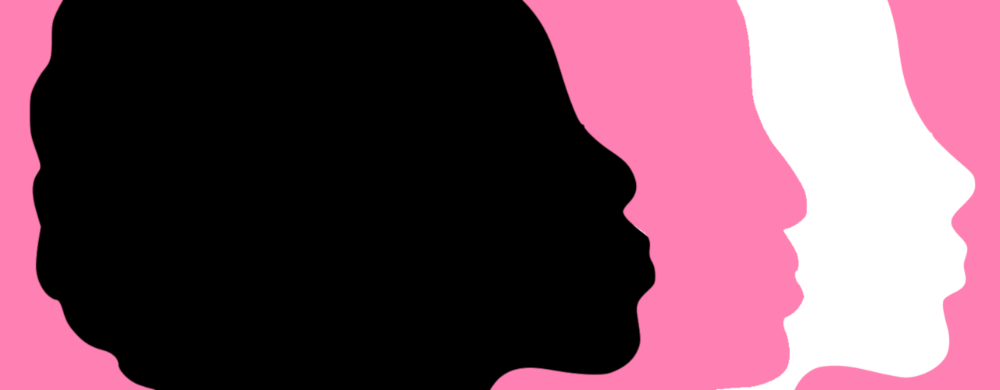
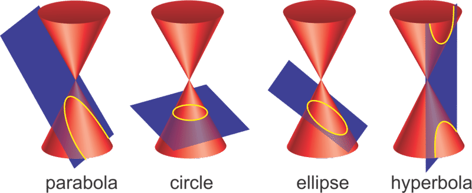
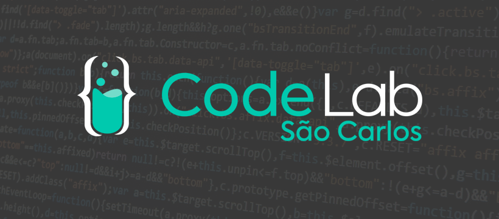
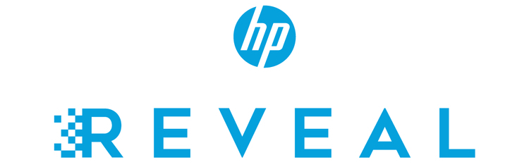

email
email gitlab
gitlab twitter
twitter

nina
aplicativo de segurança para mulheres desenvolvido como tcc do ensino técnico em informática no CTI-UNESP em 2019
acesse pelo site
projetos ao público:
trabalhos acadêmicos:

calculadora de cônicas
trabalho de geometria analítica sobre rotação e translação de cônicas
acesse pelo site
calculadora de cônicas
trabalho de geometria analítica sobre rotação e translação de cônicas
acesse pelo site

codelab de quarentena
desafios do grupo de extensão codelab do ICMC disponibilizados durante a quarentena de 2020
acesse pelo site
codelab de quarentena
desafios do grupo de extensão codelab do ICMC disponibilizados durante a quarentena de 2020
acesse pelo site
biologiar
jogo desenvolvido para auxiliar no ensino de biologia para alunos do ensino fundametal e médio, resultado de uma iniciação científica aprovada pelo congresso da UNESP em 2019
acesse pelo site

quimicar
jogo desenvolvido para auxiliar no ensino de química para alunos do ensino fundametal e médio, utilizando o aplicativo HP Reveal, resultado de uma iniciação científica aprovado pelo congresso da UNESP em 2018
projeto não disponível por depender da plataforma HP Reveal/Aurasma, hoje descontinuada
quimicar
jogo desenvolvido para auxiliar no ensino de química para alunos do ensino fundametal e médio, utilizando o aplicativo HP Reveal, resultado de uma iniciação científica aprovado pelo congresso da UNESP em 2018
projeto não disponível por depender da plataforma HP Reveal/Aurasma, hoje descontinuada
projetos pessoais:

medium
blog pessoal com o intuito de disseminar e expandir o conhecimento em torno da computação e tecnologia no geral
acesse pelo site